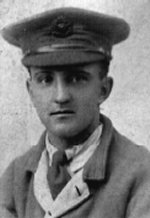

Wigglesworth and Riley family history
Including some local history of Dethick, Lea & Holloway, and northern Matlock (Derbyshire)
| Wigglesworth | WIGGS | Riley | Local history | Links |
| Book list |
| George Metcalfe Wigglesworth |
| George Walsh Wigglesworth |
| Home |
| Contact |
 |
Fred in a tie signifying he was at that time hospitalised |
Fred Wigglesworth was a soldier in the first world war, 7th Bn, The Prince of Wales’s Own
(West Yorkshire) Regt.
(The Leeds Rifles)
1914-19 and this is compiled from letters from that war together with extracts from "the Salient" written years later by comrades from the West Yorkshire Regiment.